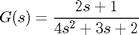
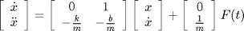
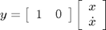
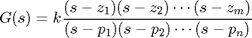

Extras: Converting Between System Representations
Key MATLAB Commands used in this tutorial are: tf , ssdata
Contents
A dynamic system is most commonly described in one of three ways:
- By a set of state-space equations and the corresponding matrices
- By a transfer function using the symbolic s variable or numerator and denominator polynomials
- By a list of poles and zeros and the associated gain
From time to time, it is useful to convert between these various representations. MATLAB can do these conversions quickly and easily.
In addition, beginning with version 5.0, MATLAB has the ability to represent systems in a generic sense in a system variable. System variables are used independently of the original system notation, and it is easy to both store a system variable from any representation and to extract any of the three system representations from a system variable.
System variable conversions
Suppose you have a transfer function of the form
(1)
This can be represented in state space form with the following commands:
s = tf('s');
G = (2*s+1)/(4*s^2+3*s+2)
G =
2 s + 1
---------------
4 s^2 + 3 s + 2
Continuous-time transfer function.
or equivalently by assigning the numerator and denominator coefficient vectors as follows:
num = [2 1]; den = [4 3 2]; G = tf(num,den)
G =
2 s + 1
---------------
4 s^2 + 3 s + 2
Continuous-time transfer function.
A state-space model can be extracted from the system variable G with the following command:
[A,B,C,D] = ssdata(G)
A =
-0.7500 -0.5000
1.0000 0
B =
1
0
C =
0.5000 0.2500
D =
0
This state-space representation can be stored in another (equivalent) system variable, H, with the following commands which returns the following output showing the relationships between the state, input, and output variables
H = ss(A,B,C,D)
H =
a =
x1 x2
x1 -0.75 -0.5
x2 1 0
b =
u1
x1 1
x2 0
c =
x1 x2
y1 0.5 0.25
d =
u1
y1 0
Continuous-time state-space model.
To extract a zero-pole-gain model from this system variable, you enter the following command
[z,p,k] = zpkdata(H,'v')
z =
-0.5000
p =
-0.3750 + 0.5995i
-0.3750 - 0.5995i
k =
0.5000
The 'v' causes the function to return a vectorized version of the zeros and poles, which is useful for SISO systems.
We can now form another system variable, K, from this zpk representation with the following command
K = zpk(z,p,k)
K =
0.5 (s+0.5)
-------------------
(s^2 + 0.75s + 0.5)
Continuous-time zero/pole/gain model.
Finally, given this system variable, we can extract a transfer function representation with the following command
[num,den] = tfdata(K,'v')
num =
0 0.5000 0.2500
den =
1.0000 0.7500 0.5000
(Again, the 'v' is useful for SISO systems.) This returns the following transfer function representation which is equal to the original transfer function before all the conversions (although both the numerator and denominator are scaled by a factor of 4)
State-Space to Transfer Function
In addition to using system variab to convert between representations, you can convert between representations directly.
Suppose you have a set of state-space equations and you would like to convert them to the equivalent transfer function. This is done using the command
[num,den] = ss2tf(A,B,C,D)
num =
0 0.5000 0.2500
den =
1.0000 0.7500 0.5000
For example, suppose you had the following set of state equations:
(2)
(3)
with
- m = 100 kg
- b = 50 Ns/m
- u = 500 N
If you want to change this to a transfer function, just run the following m-file:
A = [0 1
0 -0.05];
B = [0;
0.001];
C = [0 1];
D = 0;
[num,den]=ss2tf(A,B,C,D)
num =
1.0e-03 *
0 1.0000 0
den =
1.0000 0.0500 0
Here are some notes about ss2tf:
- The numerator, num, will have as many rows as there are outputs (or rows in the matrix C).
- The numerator and denominator are returned in descending powers of s
- Care must be taken to check the numerator and denominator, as zeros at infinity may produce erroneous transfer functions.
Zeros at Infinity
This last point needs some further explanation. We say that a system has zeros at infinity if the limit as s->infinity of the value of the transfer function is equal to zero; this happens whenever you have more poles than zeros. You will see this in the root locus plot as asymptotes which go to infinity (the number of asymptotes is equal to the number of zeros at infinity). MATLAB sometimes computes these zeros at infinity as being large finite numbers.When this happens, some of the coefficients in the numerator that are supposed to be zero end up being very small numbers. It may not seem like a big deal, but it can cause errors when trying to use the transfer function later on. You should always check your transfer function, and if numbers that are 0.0000 show up that are supposed to be zero, rewrite the numerator into MATLAB to compensate.
A good example follows:
A = [0 1 0 0
0 -0.1818 2.6727 0
0 0 0 1
0 -4.545 31.1818 0];
B = [0
1.8182
0
4.5455];
C = [1 0 0 0
0 0 1 0];
D = [0
0];
[num,den]=ss2tf(A,B,C,D)
num =
0 0 1.8182 -0.0000 -44.5460
0 0 4.5455 -7.4373 -0.0000
den =
1.0000 0.1818 -31.1818 6.4786 0
If you look at the numerator, the first and last element of each row are 0, while the second and fourth element in each row are 0.0000. If you look closer at each of these elements, you will find that they are not zero, but in fact some very small number. To see this, enter any of the following commands into the MATLAB command window: num(1,2), num(1,4), num(2,2) or num(2,4). You should get something similar to the following as an answer: 7.1054e-15, -6.2172e-15, 1.2434e-14, or 4.4409e-15. Look at the roots of the numerator polynomials using roots(num(1,:)) and you will see the roots of the numerator which are almost at infinity but not quite.
This numerical inconsistency can be eliminated by adding the following line after the ss2tf command to get rid of the numbers that are not supposed to be there:
num = [num(1,3) 0 num(1,5)
num(2,3) 0 num(2,5)];
Now all of the small numbers have been replaced with zeros. Always make sure to look at your transfer function and understand what it means before you use it in the design process.
Transfer Function to State-Space
The reverse of the command ss2tf is the tf2ss command, which converts a transfer function of a system into state-space form. The command is issued like this:
[A,B,C,D] = tf2ss(num,den)
A =
-0.1818 31.1818 -6.4786 0
1.0000 0 0 0
0 1.0000 0 0
0 0 1.0000 0
B =
1
0
0
0
C =
0 1.8182 0 -44.5460
0 4.5455 0 -0.0000
D =
0
0
One important fact to note is that although there is only one transfer function that describes a system, you can have multiple state-space equations that describe a system. The tf2ss command returns the state-space matrices in control canonical form. Therefore, if you take a set of state-space equations, convert them into a transfer function, and then convert it back, you will not have the same set of state-space equations you started with unless you started with matrices in control canonical form.
As an example, take the numerator and denominator created above and convert it back to state-space. This can be done with the following MATLAB code:
[A,B,C,D] = tf2ss(num,den)
A =
-0.1818 31.1818 -6.4786 0
1.0000 0 0 0
0 1.0000 0 0
0 0 1.0000 0
B =
1
0
0
0
C =
0 1.8182 0 -44.5460
0 4.5455 0 -0.0000
D =
0
0
This is obviously not the same set of matrices that were initially used, but the input-output behavior of this system is the same as that of the previous one. There are infinitely many ways to represent a given transfer function in state-space form; MATLAB chooses the control canonical form. The states will not have the same meaning as they originally did.
State-Space to Zero/Pole and Transfer Function to Zero/Pole:
There is also a third way to represent a dynamic system, and that is the pole-zero model. This model is basically the same as the transfer function model, except that the polynomials have been factored so the poles are all in the denominator and the zeros are in the numerator. The basic format looks like the following:
(4)
Remember that for a proper transfer function, the number of poles n is greater than or equal to the number of zeros m. MATLAB can make the transformations from either state-space or transfer function to the pole-zero representation. The commands to get the system into zero-pole form are:
[z,p,k] = tf2zp(num,den)
z =
4.9498 0.0000
-4.9498 -0.0000
p =
0
-5.7753
5.3851
0.2083
k =
1.8182
4.5455
if you have a transfer function, and:
[z,p,k] = ss2zp(A,B,C,D)
z =
4.9498 0.0000
-4.9498 -0.0000
p =
0
-5.7753
5.3851
0.2083
k =
1.8182
4.5455
if you have a state-space model
Both of these commands should return three variab: z, p, k. The variable z returns all of the zeros in columns. There should be one column for every row in the transfer function numerator or every output, y (rows in the C matrix). The variable p returns all of the poles in a column. The variable k returns a column of gain values. The column should have as many rows as numerator rows or outputs, y. For example, using t he state space model and transfer function above, enter either of the following m-files:
num = [1.8182 0 -44.5460; 4.5455 -7.4373 0]; den = [1 0.1818 -31.1818 6.4786 0]; [z,p,k] = tf2zp(num,den)
z =
4.9498 0
-4.9498 1.6362
p =
0
-5.7753
5.3851
0.2083
k =
1.8182
4.5455
or
A = [0 1 0 0
0 -0.1818 2.6727 0
0 0 0 1
0 -4.545 31.1818 0];
B = [0
1.8182
0
4.5455];
C = [1 0 0 0
0 0 1 0];
D = [0
0];
[z,p,k] = ss2zp(A,B,C,D)
z =
4.9498 1.6362
-4.9498 -0.0000
p =
0
-5.7753
0.2083
5.3851
k =
1.8182
4.5455
There are two columns of zeros, and therefore the k matrix has two rows (one for each z column).
Pole/Zero to State-Space and Pole/Zero to Transfer Function
As you may have already guessed, if you have a system described by the pole-zero method, you can convert that to either the state-space model or the transfer function. To get the state-space model, enter the following command:
[A,B,C,D] = zp2ss(z,p,k)
A =
-0.1818 31.1818 -6.4786 0
1.0000 0 0 0
0 1.0000 0 0
0 0 1.0000 0
B =
1
0
0
0
C =
0 1.8182 -0.0000 -44.5460
0 4.5455 -7.4373 -0.0000
D =
0
0
Again, it is important to note that more than one set of state-space matrices can describe a system. The state-space matrices returned from this command are also in control canonical form. For example, take the z, p, and k matrices you just created and convert them back to state-space:
[A,B,C,D] = zp2ss(z,p,k)
A =
-0.1818 31.1818 -6.4786 0
1.0000 0 0 0
0 1.0000 0 0
0 0 1.0000 0
B =
1
0
0
0
C =
0 1.8182 -0.0000 -44.5460
0 4.5455 -7.4373 -0.0000
D =
0
0
Again, it is important to note that more than one set of state-space matrices can describe a system. The state-space matrices returned from this command are also in control canonical form
You will recognize this as the same set of matrices you got using the command, tf2ss.
To get a system described by a pole-zero model into a transfer function model, use the following command:
[num,den] = zp2tf(z,p,k)
num =
0 0 1.8182 -0.0000 -44.5460
0 0 4.5455 -7.4373 -0.0000
den =
1.0000 0.1818 -31.1818 6.4786 0
You will recognize this as the same transfer function we started out with.